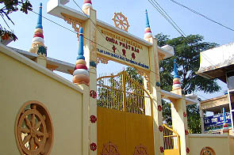
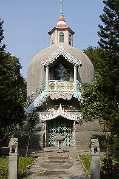
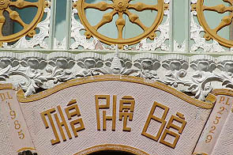

ChuaPhatBao/T.P.HoChiMinh
佛寶寺/ホーチミン
林覚寺から歩いて数分の所にある佛寳寺。
大通りからほんの少し入ったところにあるためこじんまりした印象の寺だ。

門の前では隣の家の子供達が走り回るローカルな感じの門前風景だ。チョット変な門だな〜と思いつつも中に入ると・・・

ナンじゃこりゃあ〜
ベル型のパゴダといったらいいのだろうか、何とも言えない奇妙なカタチをしている。
このようなカタチのパゴダはベトナムでも他になかった。
六角の塔屋の上に門にあったのと同じカラフルな擬宝珠がアクセントになっている。
2階部分の正面に取り付く水色の屋根飾りなどは遠目に見るとミャンマーやタイ辺りの寺院のようでもある。

しかし良く見てみると階段の手摺は松の木、その下は雲型と微妙に東アジアンなテイスト。
一階の扉から中を伺う。カギがかかっていて中には入れない。
中は納骨堂になっており、無数の骨壷が並んでいる。
裏に回ると外階段が左右に取り付いていて2階に登れる。
2階に登ってみるとそこも扉にカギが掛かっていたので外から中を覗き込んでみると仏像があり、天井がドーム屋根になっている。
ドーム天井の真ん中にはポッコリと穴が開いていてその上には塔屋の内部がみえる。
塔屋には階段などが付いてなく、ただこうして2階から眺めるだけのものである。
中にはやたらきらびやかな厨子のようなものがある。容れ物の形状からして恐らく舎利だと思われる。

編額にはThapPhatBaoの文字が。これがまた遠目に見ると漢字に見えるという優れモノ。
1985（仏暦2529）年の建造であることがわかる。
境内でうろうろしていた坊さんがいた。彼は修行のためにカンボジアから来たという。
何故カンボジアからわざわざホーチミンにまで修行に来るのだろうか？カンボジアには大乗仏教の寺院はないのだろうか。
修行、頑張ってね。
次へいきましょう
越南珍寺劇場
珍寺大道場 HOME